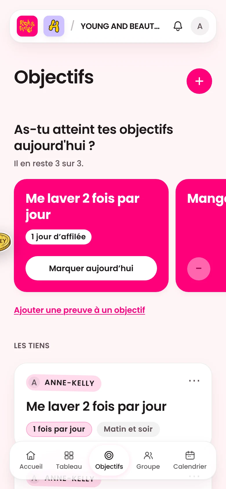
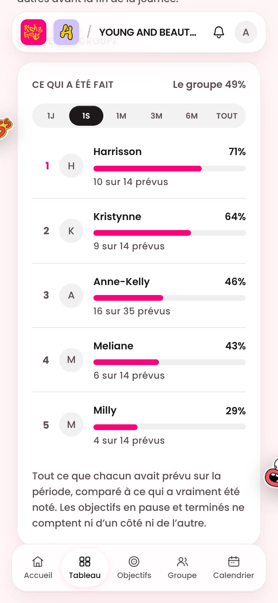

Kee · Kreeative
Processus · 6 étapes
Mon processus de design en 6 étapes, du brief au lancement.
Avec un vrai projet derrière chacune.
Glisse →
Mon processus de design01 / 08
Processus · 6 étapes
Avec un vrai projet derrière chacune.
Glisse →
01 · Brief
Avant d’ouvrir quoi que ce soit. Pour Lyzma Industries : du luxe fait main qui garde la trace de la main.
Lyzma Industries · brief
« Assez raffinée pour des bijoux haut de gamme, assez chaleureuse pour honorer le travail. »
02 · Recherche
Pour The Ivory Sukundu, c’était toujours la même : jusqu’où tombe cette longueur ? La réponse est devenue le guide des longueurs.
03 · Moodboard
Pour The Bakery : qu’est-ce qu’on ressent en croquant dans ce qu’on avait envie de manger toute la journée ? Le rose vif et la crème viennent de là.


04 · Pistes
Cette semaine, ma bannière LinkedIn est passée par cinq palettes avant de garder le brun le plus foncé, l’ivoire et le rose bébé.
Noir
Crème
Ivoire
Chocolat
Brun le plus foncé ✓
05 · Affiner
La v1 de Rich & Friends s’est éteinte au bout de neuf jours. La v2 a été reconstruite contre les raisons qui font abandonner : une question par jour, et un groupe qui voit le résultat.

v2 · Objectifs

v2 · Tableau
06 · Lancement
Tout le parcours de commande de Tabouret fonctionne dans le navigateur, et chaque décision est écrite dans un fichier : la version suivante part de raisons, pas de souvenirs.

Enregistre ce post ↓
kreeative.xyz